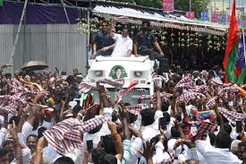

On 1 June 2025, DMK president Stalin launched "Oraniyil Tamil Nadu" (Tamil Nadu as one team), an enrollment drive to add new party members and urged the party cadres to enroll at least 30% of voters in each polling booth to the party through a door-to-door outreach.[128][129] On 24 March, the party released a song for its campaign with the theme "Stalin Thodarattum, Tamil Nadu Vellattum" (let Stalin continue, let Tamil Nadu triumph)
On 29 March 2026, Stalin released the party's manifesto for the elections.[131] It promised ₹8,000 (US$85) coupons for non–income tax-paying homemakers to purchase household appliances, extension of the chief minister’s breakfast scheme in government schools till class eight, free laptops to all government college students, enhancement of the monthly entitlement for women to ₹2,000 (US$21), increase in old-age pension from ₹1,200 (US$13) to ₹2,000 (US$21), and provision of ₹2,500 (US$26) for persons with disabilities. It also proposed expanding coverage under the state government insurance scheme to ₹1.5 million (US$16,000) and construction of a million houses for the poor.
A Special Intensive Revision (SIR) was conducted by Election Commission of India before the polls, and in February 2026, after the exercise, 56,707,380 voters were declared as eligible to vote in the 2026 assembly election in Tamil Nadu.[178][179] As per the final voter list, 57.3 million voters were eligible to vote in the assembly elections in Tamil Nadu. This includes 28.3 million male, 29.3 million female, and 7,728 third gender voters.
The polling was held on 23 April 2026 across 75,064 polling stations across 33,133 locations in the state. About 1,06,418 Electronic Voting Machines were used for the polls.[122][180] As per the data released by the Election Commission after the polling day, the state recorded 84.69% voter turnout, which was 11.06% higher than the preceding assembly elections in 2021, and the highest ever recorded in the assembly elections in the state.[122][181] Of the registered electorate of 57.3 million, 83.57% of male, 85.76% of female, and 60.49% of third gender voters cast their votes.[122] On 25 April, the turnout was revised to 85.1%.
The votes polled increased by 5.5% compared to the previous assembly election in 2021, while the increase was 6.22% in 2021, 18.5% in 2016, and 11.4% in 2011 when compared to the respective previous assembly elections in the state. Despite the lower increase in the actual votes polled, the higher percentage of voter turnout is attributed in part to the revision of the electoral rolls during the SIR process conducted prior to the polls